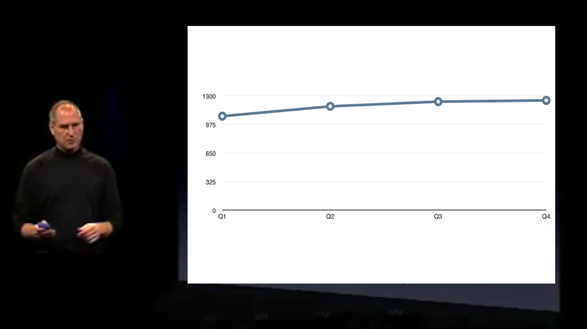

喬布斯是個頂級的企業家，也是頂級的營銷家，玩起數據可視化來，也是便宜佔盡，毫不手軟。
我們選用喬布斯在2006年 Macworld 上的一張棒圖，拆解他的數據化妝術。
2006年 Macworld 上，喬布斯向觀衆展示蘋果 Mac 產品在2005年四個季度的銷量：
增長勢頭很厲害啊，不過，好像有什麼不對？
這四個棒的基線並不是零，而是1000，所以變化似乎非常大。那麼，我們用同樣一組數據，只是將基線換成0，會如何？

馬上縮水了一圈啊……

然後，我們留意到這個棒圖是 3D 的，應用透視關係，近的會變大，顯得增長勢頭很強。於是，我們再將這個圖還原成 2D 的……

好了，拆到這裏，其實就差不多還原到這個數據圖樸素的狀態了。
如果比爾蓋茨來給喬布斯做設計……
當然，我們是不會就此罷休的。下面，我們假裝自己是喬布斯的老對頭比爾蓋茨，想方設法破壞老喬的演講。
喬布斯想強調季度之間的變化，自然用棒圖，讓兩季之間有明顯的高低差別。
我們想抹平差別，則可以用線圖，給兩季度之間的變化添加過渡。而且，沒有了棒圖的棒爲主體，整個圖空空如也，更突出銷量薄弱。

剛纔是玩圖像本身，我們現在來調圖像的外框比例。正方型改成長方形，再次削弱高低差別。

所謂水能載舟，亦能覆舟，喬布斯用3D來強調增長，蓋茨也可以用 3D 來削弱增長，甚至讓視覺效果違背實際趨勢。
下面這個圖，用的還是同一組數據，但是精心調校視角和透視關係——雖然 Mac 銷量每年在增加，從視覺上看，倒似乎先增後減。

我們再回顧喬布斯本人選擇的可視化，可以看到，即使用完全相同數據，也能做出傾向完全相反的可視化：
總結
以下手法會強調數據變化：
- 加入3D透視，放大最近的數據圖像；
- 提升基線，除去棒圖不變的部分，突出變化的部分；
- 用高寬接近的圖像外框比例。
相反，以下手法會削弱數據變化：
- 加入3D透視，縮小最近的數據圖像；
- 用寬而扁的圖像外框比例。
以數據新聞而言，使用3D透視需要非常謹慎，因爲一旦引入3D透視，你就可以扭曲原數據的趨勢，即使數據一直增長，也可以可視化爲下跌。
基線一般用0爲宜，但有時候卻又確實需要升高，否則幾乎看不到變化。這個需要新聞人自行判斷，並明確標註。
至於高寬比，有各平臺適配需要考慮，寬圖多適合桌面，方形、窄高的圖則適合手機。編輯須留意外框比例這對可視化語義的影響。